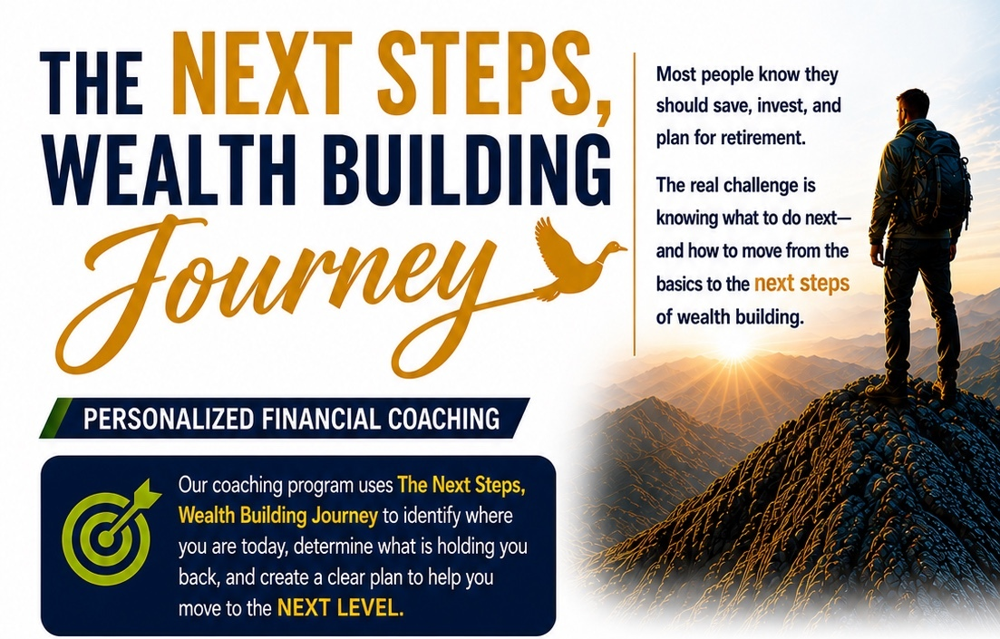

1
Freedom
Break FreeBreak free from debt and build your financial foundation.
LEARN MORE
Everyone starts somewhere. The goal is not to skip steps — it is to understand your current step, complete it, and know what comes next.
Break free from debt and build your financial foundation.
LEARN MOREProtect what matters most and prepare for the unexpected.
LEARN MOREBuild wealth and grow your money for your future.
LEARN MOREInvest with purpose and make your money work for you.
LEARN MOREMultiply your impact and create generational wealth.
LEARN MORELeave a lasting legacy and secure the future for generations.
LEARN MOREFocused conversations around your real financial situation.
A clear sequence of actions instead of generic financial advice.
Track the habits, milestones, and decisions that move you forward.
Build a foundation that supports investing, multiplying, and legacy.